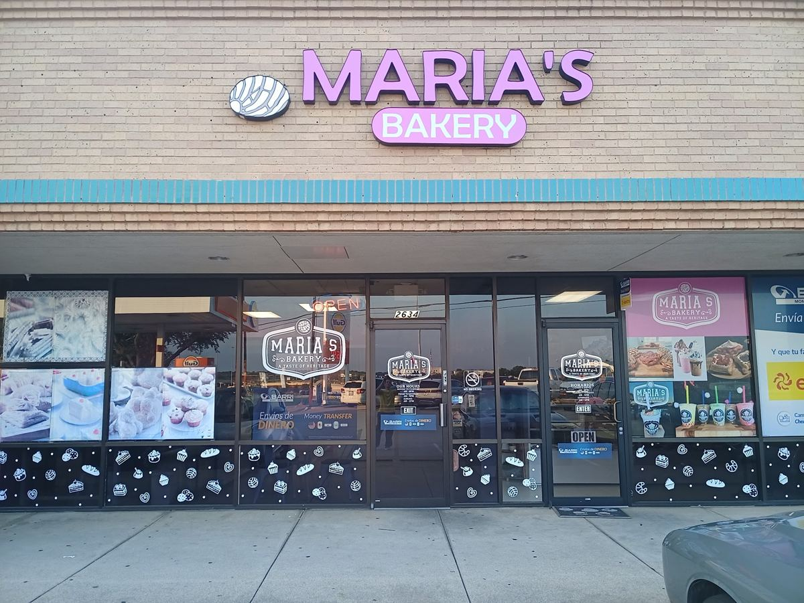
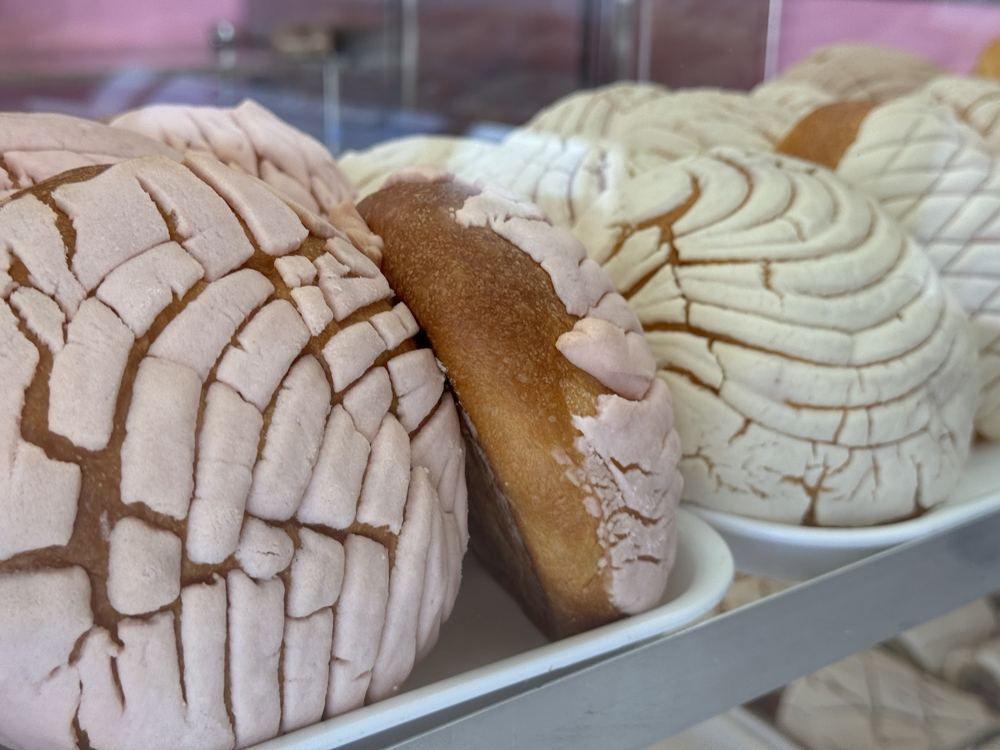
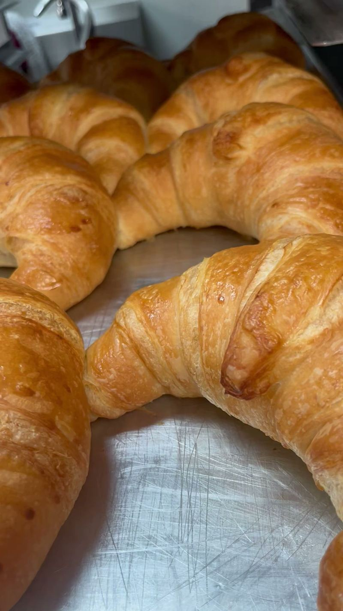
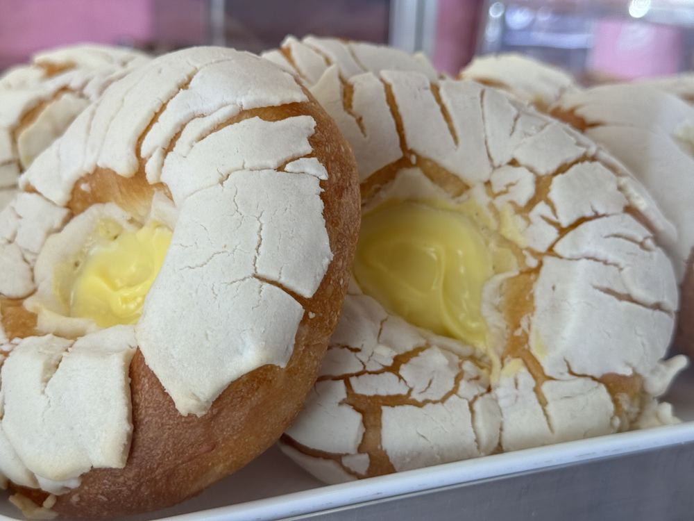
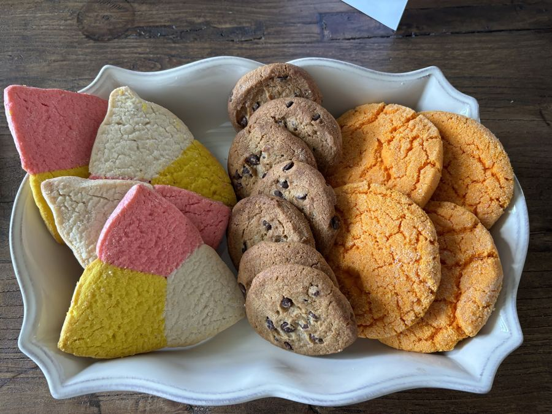
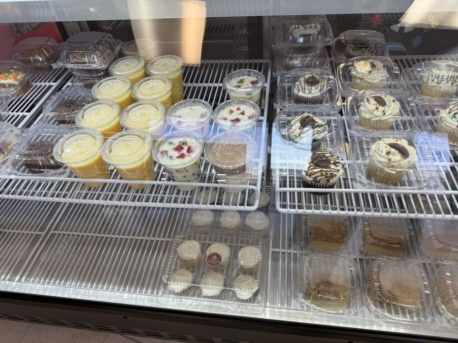
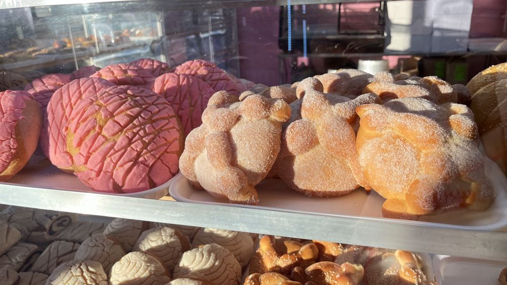
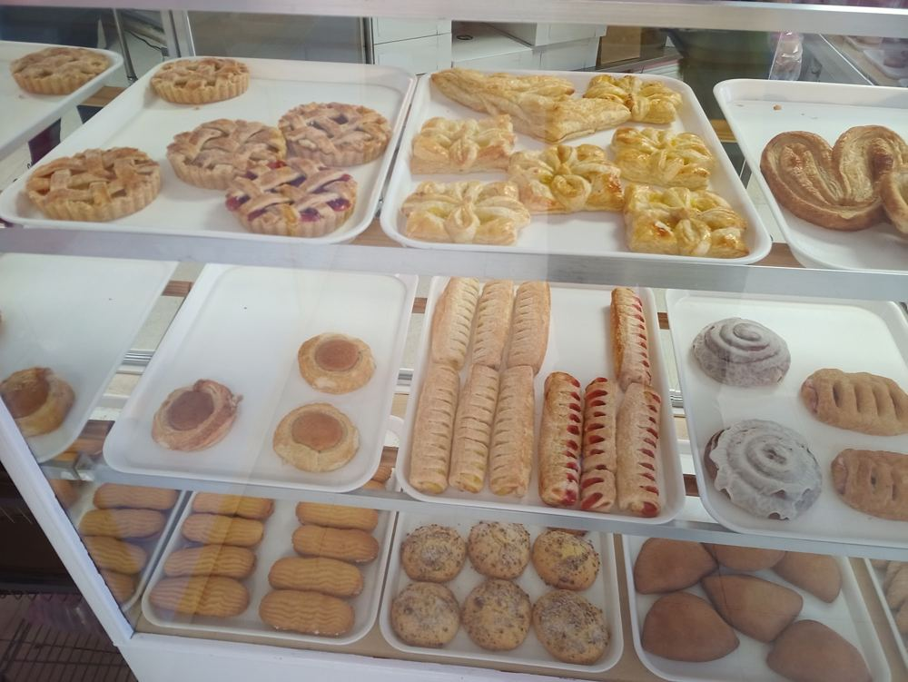
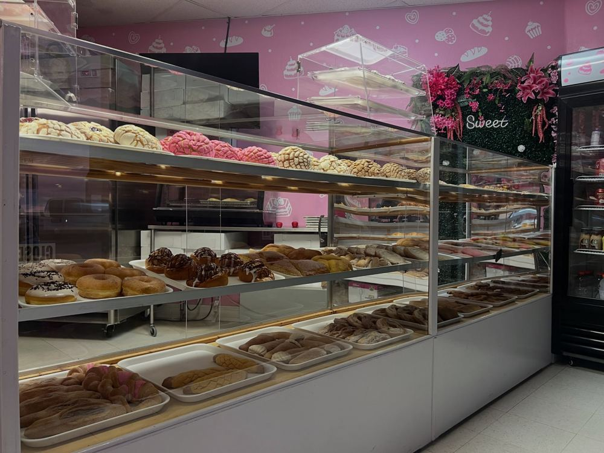

Our goal is to bring a taste of Mexican gastronomy to your table, with sweet bread, snacks and cakes. Pan dulce, bocadillos y pasteles.
Call (682) 223-1242Hours
Conchas, croissants, cinnamon rolls, cakes and more, tucked away on William D Tate Ave.








Tue–Fri 7 AM–7 PM
Sat 8 AM–8 PM
Sun 8 AM–3 PM
Monday closed
per public listing; confirm current hours
Call the shop about cakes and special orders.